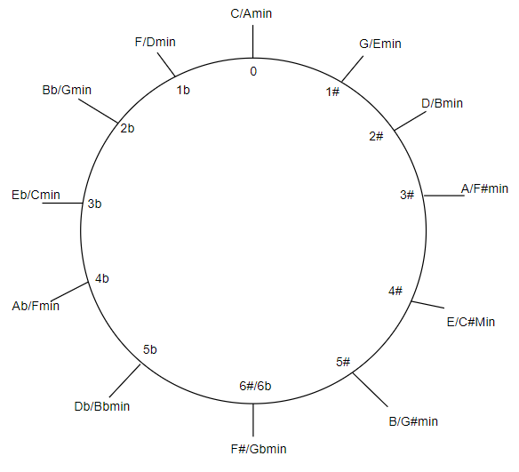

Quintenzirkel
Ein Quintenzirkel ist ein Diagramm, das die Beziehung zwischen verschiedenen Tonarten in der Musiktheorie darstellt. Es besteht aus einem Kreis, der die zwölf möglichen Tonarten darstellt. Die Tonarten sind so angeordnet, dass jede Tonart um eine Quinte (fünf Tonstufen) von der vorherigen entfernt ist, was bedeutet, dass sie einen gemeinsamen Ton teilen. Der Quintenzirkel wird oft verwendet, um Tonarten zu analysieren, Modulationen zu planen und die Harmonie in der Musik zu verstehen. Er ist ein wesentliches Werkzeug für Komponisten, Arrangeure und Musiker, um komplexe harmonische Strukturen zu verstehen und zu verwenden.
Diatonic Chord Progressions
Eine Diatonic Chord Progression ist eine Abfolge von Akkorden, die innerhalb derselben Tonleiter oder Tonart liegen. Sie basiert auf den harmonischen Funktionen und den Akkorden, die natürlicherweise in dieser Tonleiter vorkommen, ohne dass chromatische Änderungen vorgenommen werden. "Full" und "Half" Diatonic Progressions unterscheiden sich in der Anzahl der Akkorde, die verwendet werden. Die "Full" Diatonic Progression umfasst normalerweise alle sieben Akkorde der Tonleiter, während die "Half" Diatonic Progression nur eine Auswahl dieser Akkorde enthält, oft vier oder fünf. Die "Full" Progression bietet eine umfassendere harmonische Entwicklung, während die "Half" Progression eine kompaktere und fokussiertere Struktur aufweist.
| I | II | III | Full | Half |
|---|---|---|---|---|
| C | D# | Gb | A | A# |
| A | C | F | Gb | G |
| B | D | F | Ab | A |
| D | F | Ab | B | C |
| E | G | A# | Db | D |
| F | Ab | B | D | D# |
| G | Bb | Db | E | F |
| C# | E | G | A# | B |
| F# | A | C | Eb | E |
| Ab | D# | D | F | Gb |
| Bb | Db | E | G | Ab |
| Db | E | G | A# | Cb |
| Eb | Gb | A | E | Bb |
Secondary Dominant Chords
Ein Secondary Dominant Chord ist ein Akkord, der außerhalb der diatonischen Tonleiter einer bestimmten Tonart liegt, aber vorübergehend in einer musikalischen Progression eingeführt wird. Er wird normalerweise verwendet, um eine Modulation oder eine vorübergehende Verschiebung zu einer anderen Tonart zu signalisieren. Durch die Einführung eines Secondary Dominant Chords erhält die Musik kurzzeitig eine zusätzliche Spannung, die dann durch die Rückkehr zur Haupttonart aufgelöst wird. Dieser Akkord erzeugt eine klangliche Vielfalt und eine vorübergehende Veränderung des harmonischen Kontexts, bevor die ursprüngliche Harmonie wiederhergestellt wird.
| Grundton | Secondary Dominant |
|---|---|
| C | D7 |
| D | E7 |
| E | F#7 |
| F | G7 |
| G | A7 |
| A | B7 |
| B | C#7 |